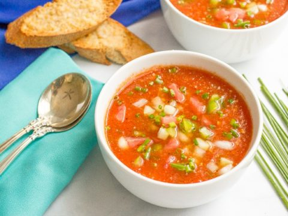

Gazpacho
Ingredients:
- 8 tomatoes
- 1 cucumber
- 1 bell pepper
- 4 cloves garlic
- 1/2 red onion
- 1/4 cup red wine vinegar or sherry vinegar
- cilantro
- 4 tbsp olive oil
- salt & pepper to taste
Steps:
- Peel the cucumber, cut into chunks, and transfer to a blender. Add the tomatoes, peppers, onion, garlic, cilantro, vinegar, olive oil, salt, and pepper. Blend until smooth. Season to taste and chill for at least 2 hours.
- Serve the soup with the reserved diced cucumber, fresh herbs, drizzles of olive oil, and freshly ground black pepper.
- Enjoy!!!